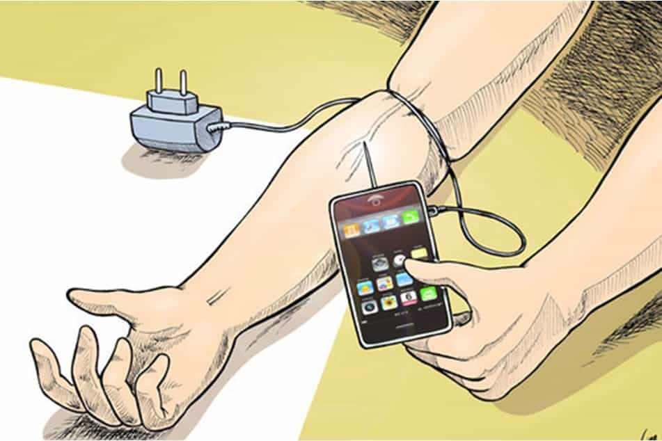

Corey is an iconoclast and the author of 'Man's Fight for Existence'. He believes that the key to life is for men to honour their primal nature. Visit his new website at primalexistence.com


Do you ever stop and wonder whether you’re being controlled by a force beyond yourself? Does the world ever feel empty, unreal, and mad all at the same time? Maybe these thoughts don’t even occur to you as you’re already consumed by all the technological innovations that were supposedly made to help us. In any case, here are twenty signs that you might be a slave to modern technology.

Not a slave.
Are people even experiencing life anymore? It seems everyone today is more interested in showing off what they’ve seen and where they’ve been than they are in actually relishing in those moments. Today’s social media is making people take “Pics or didn’t happen” attitude quite literally.
How often do you snap out of staring at your favorite screen only to realize that you just spent several hours online? You had better things to do, but you just wasted your time on brainless Youtube videos and dumb clickbait articles. You promise yourself not to do it again, but… Oh! You need to check THIS out!

Do you constantly check for emails, messages, updates, and news frequently even when there aren’t any? People today are such junkies with their smartphones that nomophobia is a real thing.
Average Americans spend more than 7 hours a day staring at screens. And you know things are getting bad when you start to feel that the real world is too boring in comparison. Even myself, who prefers being in nature and enjoys doing physical activities, need to spend exorbitant amount of time working on my laptop.

People around the world are suffering from Vitamin D deficiency due to lack of sunlight, and technology is not making things any better. Is it any wonder that the folks who are constantly plugged in don’t seem to have any vitality left in them?

The same people who deprive themselves of natural light during the day love to bombard their eyes with artificial light at night time when they need to sleep. Doing this will really screw up your sleep cycle by disrupting the melatonin production in your brain.
I don’t know how many times people almost bumped into me because they were too busy staring at their phones while walking. I also find it outrageous that many people rationalize their texting and driving habits by claiming that they’re smart (i.e. entitled) enough to do it safely.
I’m sure this will be very useful in real life.
I always thought all these “brain training” games people play on their phones were dumb and pointless. Recent studies have proven my suspicion.

I was a shy and awkward teenager growing up as I had spent almost all my free time on television, internet, and video games instead of socializing. It took me almost a decade of painful struggle just to catch up and be somewhat average with my social skills.
Many millennials today are bunch of bumbling wrecks who are shallow and clueless. I’ve even met few teenagers who were afraid to pick up a ringing phone because they were too used to receiving texts instead.
Would bang… by pressing the button repeatedly.
Internet porn has already plagued and ruined men all over the world, but did you know that there are now “virtual girlfriends”? They’re already popular in Japan and the West will probably see a similar rise of prevalence of these AI chicks with the continuing dysfunctional sex relations in our societies. Many men are likely to turn into total sex slaves to machines once the sexbots come into being.
You spend several hours checking out the specs of the latest consumer devices, obsessing over every minute details like how the new version of the product is 0.8mm thinner than the previous model or how it has more pixels than you could ever detect with your eyes. You line up to buy the next cutting-edge phone because your current one is already 11 months old. And once you’ve dished out your cash to own your prize, you debate with the idiots with rival phones and sneer at them because your toy makes you superior to them.
Yeah, that’ll show those losers.
“Join us! You’ll be happy and beautiful just like us. We promise!”
I’ve been wanting to get rid of my low-end smartphone for a while now so that I can downgrade to a flip phone and simplify my life. That, however, has proven difficult as the people where I live use a popular third-party app for almost all personal and work-related communications. I’ve virtually been forced to remain in the clutch of my smartphone even though I don’t want it anymore.
It’s already nearly impossible to live without credit cards and emails. How much longer before the same becomes true for smartphones and RFID’s?

Technology has ushered us modern humans to a sedentary lifestyle that is having a devastating effect on our health. Forward neck posture is epidemic in today’s world where people are constantly leaning forward to stare into a screen. And this is just from using modern electronic devices. Don’t even get me started with processed foods, genetically-modified foods, chemical toxins, hormones, etc. present in everything that we consume.
Have you noticed that you feel bored more easily, and have difficulty concentrating and remembering things? Back in the day, people used to memorize entire tales and epic poems; today, many young people struggle to remember their own phone numbers.
Also, people can’t seem to read anything longer than few hundred words anymore as it automatically leads to the “TL;DR” response.
No, it doesn’t. If anything, your productivity suffers while your brain becomes worse.

Cashless society is not a good thing.

Is the technology you’re using guiding you or commanding you? The line seems to be getting blurrier everyday, but not too many people care because they are addicted to convenience that they provide.
Don’t worry, it’s for your own safety.
Never in history has governments and corporations been able to amass as much information about us as they do now. Today’s world of information collection and surveillance is a Stasi wet dream come-true.
Even though the chance of dying from a terrorist attack is less than getting struck by a lightening, the people have bowed down to the government’s fear-mongering campaign and have willfully given up all notion of privacy. Your every movement, online search, purchase, and communication are being recorded and stored now. The real winner of the War on Terrorism is Big Brother.

Now, it just needs a mini-gun, facial recognition technology, and database from Facebook to hunt down anyone with higher testosterone than Caitlyn Jenner.
While us peasants are barely able to arm ourselves with basic weapons like knives and guns—if at all—our governments possess all sorts of advanced weaponry to control us. And with the coming robotic technology, it seems our overlords won’t even need other men to stamp our faces with a boot—forever.
Humanity will be subjugated not by guns and prisons, but with electronic screens and entertainment.
Even with the above points, there will be many people who openly and blindly accept all technological innovations as a good thing. They will claim that you just need to “moderate” your use and everything will be fine. But who decides what’s moderate? How do you quantify it? How do you remain moderate in a world that is becoming increasingly dependent on technology? Moderate use today would have been considered excessive just a century ago.
There are many more problems regarding technology, but I will conclude by saying that the issue isn’t a simple black-and-white one to generalize it as being either good or bad. And I’m certainly not suggesting that we abandon all technology and go back to the primal times (at least not yet). What we must do, however, is be more aware of the effects that technology is having on our daily lives lest we end up like frogs being slowly boiled in a pot. You don’t want to wake up one day only to find yourselves consumed by technology with no way to escape.
 If you like this article and are concerned about the future of the Western world, check out Roosh's book Free Speech Isn't Free. It gives an inside look to how the globalist establishment is attempting to marginalize masculine men with a leftist agenda that promotes censorship, feminism, and sterility. It also shares key knowledge and tools that you can use to defend yourself against social justice attacks. Click here to learn more about the book. Your support will help maintain our operation.
If you like this article and are concerned about the future of the Western world, check out Roosh's book Free Speech Isn't Free. It gives an inside look to how the globalist establishment is attempting to marginalize masculine men with a leftist agenda that promotes censorship, feminism, and sterility. It also shares key knowledge and tools that you can use to defend yourself against social justice attacks. Click here to learn more about the book. Your support will help maintain our operation.
Read More: Why Able Men Should Cheer Every Job Eliminated By Technology